The global Battery Energy Storage Systems (BESS) market has reached an inflection point, with record-breaking growth and unprecedented investment creating a fertile landscape for innovative startups. As worldwide battery storage installations surged 54% in the first half of 2025, reaching 86.7 GWh of deployed capacity, a new generation of companies is reshaping the energy storage ecosystem with breakthrough technologies and business models.
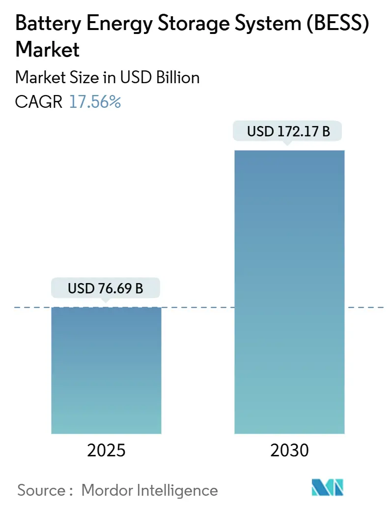
Market Dynamics Driving BESS Innovation
The BESS market is experiencing explosive growth, with global valuation projected to reach $150 billion by 2030. This unprecedented expansion is driven by several converging factors: the integration of intermittent renewable energy sources, increasing electrification across industries, and the critical need for grid stability as power systems modernize worldwide.
Venture capital funding in the energy storage sector reached a record $9.2 billion across 86 deals in 2023, representing a 59% year-over-year increase. This momentum has continued into 2025, with private equity and venture capital investments already exceeding $17.86 billion globally by August, surpassing the entire 2023 total of $16.17 billion.
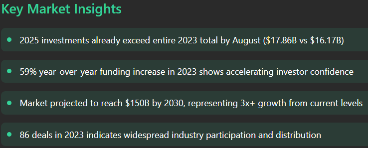
Key BESS Technologies and Their Applications
Breakthrough Technology Categories
Next-Generation Battery Chemistry Leaders
Form Energy stands as the frontrunner among BESS startups with over $1.2 billion in funding. The Massachusetts-based company has revolutionized energy storage with its iron-air battery technology, delivering storage capacity at one-tenth the cost of traditional lithium-ion systems. Form's batteries can store "100 hours of energy" and are projected to achieve 500MW annual manufacturing capacity by 2028.
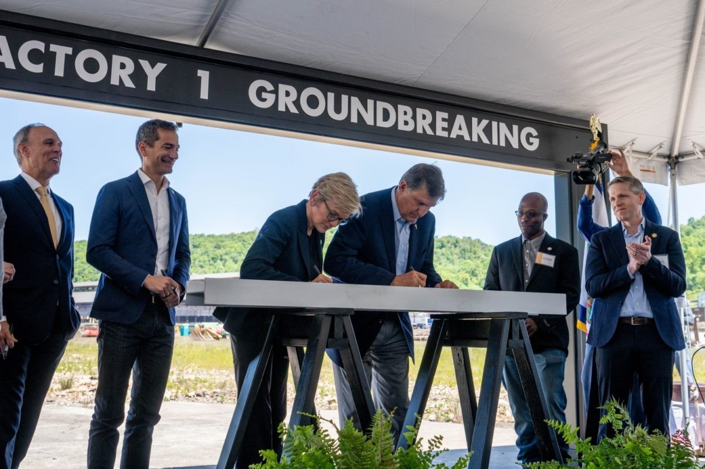
ESS is pioneering iron flow battery technology specifically designed for long-duration energy storage applications. The company's Energy Warehouse systems utilize iron, salt, and water electrolytes to provide 8-22 hours of storage capacity with unlimited cycle life and 25-year design life. Despite recent financial challenges, ESS has secured partnerships with major utilities and government agencies, including a $50 million investment from the U.S. Import-Export Bank.
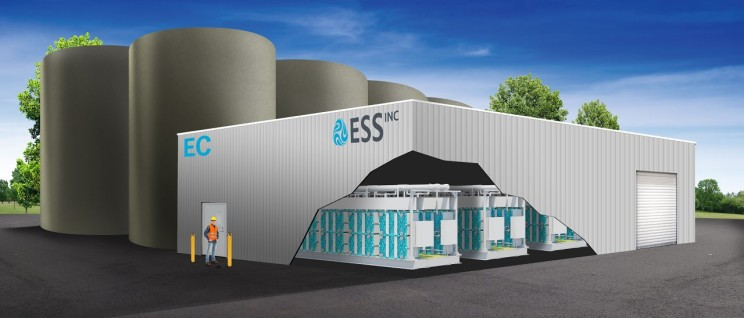
QuantumScape has emerged as a leader in solid-state battery technology, achieving remarkable performance milestones with backing from Volkswagen Group's PowerCo division. The company's solid-state cells exceeded industry standards by completing over 1,000 charging cycles while maintaining more than 95% capacity. PowerCo has committed to producing up to 80 GWh of batteries annually using QuantumScape's technology, enough to power approximately one million electric vehicles.
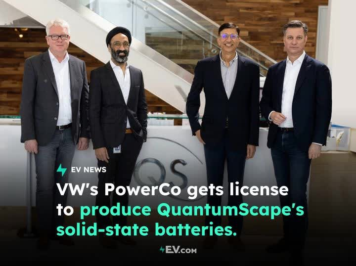
Advanced Materials Innovation
Sila Nanotechnologies, Inc. has successfully commercialized silicon anode technology that increases energy density by 20% compared to conventional lithium-ion batteries. The company's Titan Silicon technology replaces traditional graphite anodes with nano-composite silicon, enabling smaller, more powerful batteries. Major partnerships with Mercedes-Benz AG and Panasonic demonstrate the commercial viability of their approach.
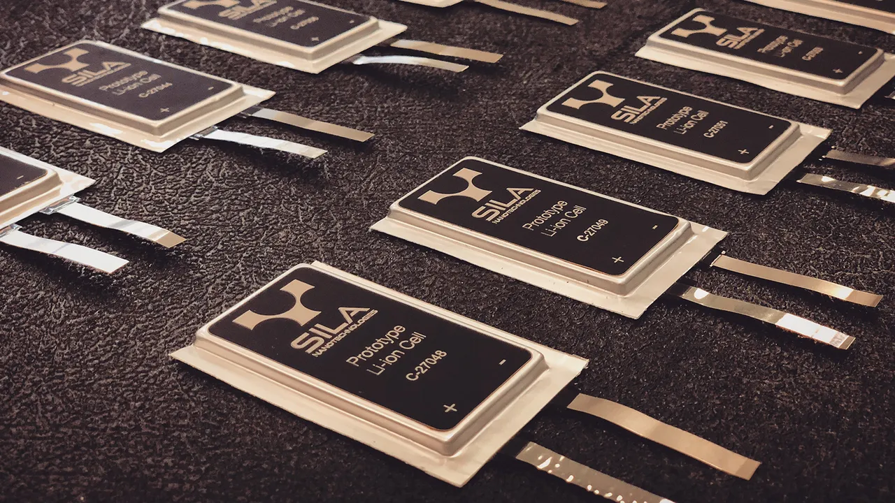
StoreDot is developing extreme fast charging (XFC) battery technology with silicon-dominant anodes that can charge an EV to 100 miles of range in just 5 minutes. The company's mature solution offers both high energy density (>320Wh/kg) and continuous extreme fast charging capability (>2000 consecutive cycles). StoreDot is actively working with 15 leading automotive brands, with six OEMs currently in the B sample development.
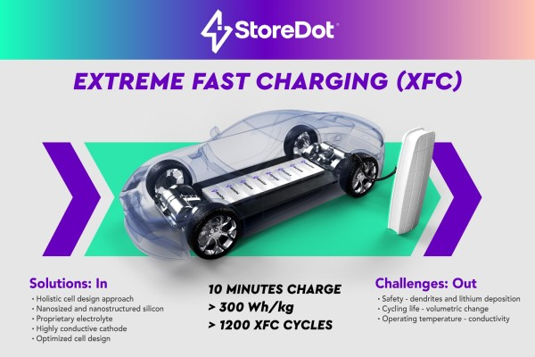
24M Technologies has reimagined lithium-ion manufacturing with its "SemiSolid" platform that eliminates over 80% of inactive materials in traditional batteries. The company's breakthrough Impervio separator technology prevents thermal runaway by detecting potential shorts before they occur, while their lithium-metal cells promise significantly enhanced energy density.
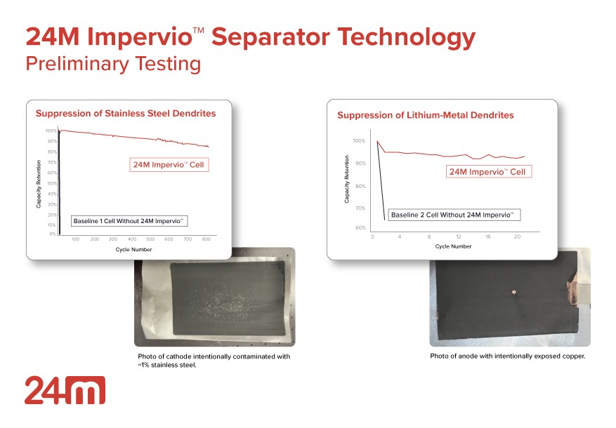
Specialized Application Leaders
Amprius Technologies, Inc. has achieved the highest energy density cells commercially available through its 100% silicon nanowire anode platform, reaching 360 Wh/kg with 15-minute charging capability. The company's technology has proven successful in aerospace applications, including powering the Airbus Zephyr UAV that set aviation records with a 64-day continuous flight.
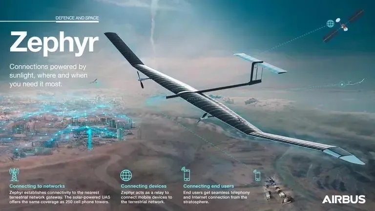
Solid Power, Inc. is developing sulfide-based solid-state batteries with strategic backing from Ford and BMW totaling $130 million. The company's technology promises 15-35% cost advantages over existing lithium-ion systems while delivering higher energy density, improved safety, and extended temperature capabilities.
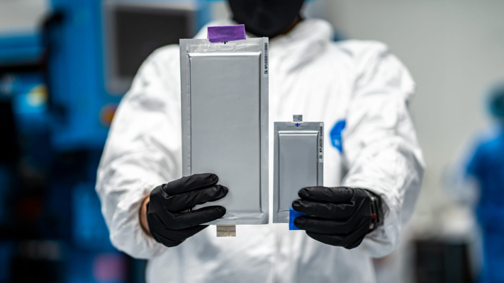
Regional Innovation Hubs
European Renaissance
Europe's BESS market is experiencing remarkable growth, with utility-scale storage capacity nearly doubling in 2025. The UK added 1.9 GWh of new BESS capacity in the first half of 2025, representing a 78% year-over-year increase. This growth has been supported by substantial government investment, including the UK's £1.6 billion dedicated energy storage fund.
Zenobe (UK) has raised over £1 billion in funding to develop both EV fleet electrification and grid-scale energy storage solutions. The company manages 735MW in contracted storage assets and targets 1.2GW of battery power by 2026, including the 100MW Capenhurst battery system, claimed to be Europe's largest transmission-connected battery.
Northvolt (Sweden), despite recent bankruptcy, represented European ambitions for battery manufacturing independence. The company's assets have been acquired by U.S. startup Lyten, which plans to combine Northvolt's manufacturing capabilities with its own lithium-sulfur battery technology.
Asia-Pacific Innovation
The Asia-Pacific region continues to lead in BESS deployment, with China accounting for over 50% of global monthly installations. Major projects include three significant developments in Saudi Arabia totaling 7.8 GWh of new capacity.
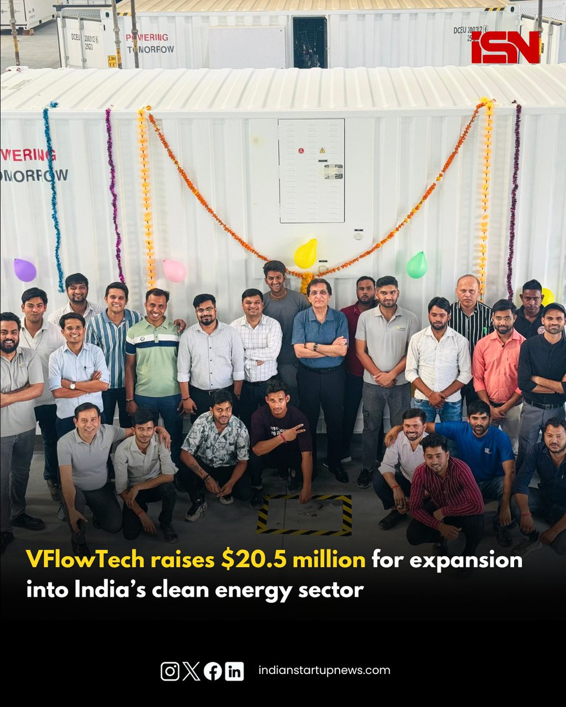
VFlowTech (Singapore) recently secured $20.5 million in funding led by Granite Asia to develop vanadium redox flow battery technology. The company represents the growing focus on alternative battery chemistries for specific applications requiring long-duration storage.
North American Pioneers
The United States benefits from substantial policy support through the Inflation Reduction Act, which extended investment tax credits to standalone energy storage projects. This has catalyzed significant startup activity and venture capital investment.
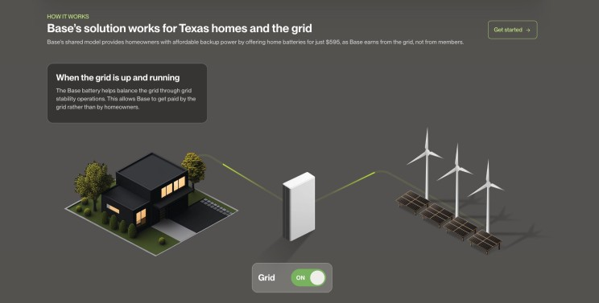
Base Power Company (Texas) raised $200 million in Series B funding to scale its distributed energy storage solution. The company's innovative approach combines home energy storage with grid support services, creating revenue streams for customers while enhancing grid stability.
Investment Landscape and Valuation Trends
The BESS startup ecosystem has attracted unprecedented investment levels, with the global energy storage market valued at $288.97 billion in 2025 and projected to reach $569.39 billion by 2034. The sector employs over 2.8 million professionals worldwide, adding nearly 196,000 new jobs in the past year alone.
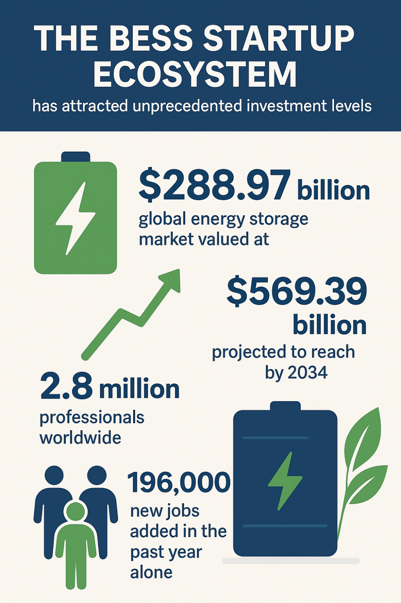
Key investment trends include:
- Technology Diversification: While lithium-ion technologies continue to dominate funding, alternative chemistries like iron-air, vanadium flow, and solid-state batteries are attracting significant venture capital.
- Manufacturing Scale-Up: Companies are transitioning from pilot projects to commercial-scale manufacturing, requiring substantial capital investments.
- Strategic Partnerships: Major automotive and utility companies are forming strategic alliances with startups to accelerate technology deployment.
Future Outlook and Market Drivers
Several factors will continue driving BESS startup growth through 2025 and beyond:
- Grid Modernization: Aging infrastructure and increasing renewable energy penetration create massive demand for storage solutions that can provide frequency regulation, peak shaving, and backup power.
- Safety Innovation: Concerns about battery fires and thermal runaway have created opportunities for startups developing inherently safer technologies like iron-air and vanadium flow batteries.
- Cost Reduction: Continued battery cost declines, from $95/kWh in 2025 to projected $68/kWh by 2030, will expand addressable markets for innovative storage technologies.
- Policy Support: Government incentives, including viability gap funding and tax credits, are accelerating deployment of large-scale BESS projects globally.
The convergence of technological innovation, policy support, and massive market demand positions 2025 as a pivotal year for BESS startups. Companies that can demonstrate superior performance, cost-effectiveness, and scalability are poised to capture significant market share in this rapidly expanding ecosystem. As the global energy transition accelerates, these innovative startups will play a crucial role in enabling a reliable, sustainable, and resilient energy future.